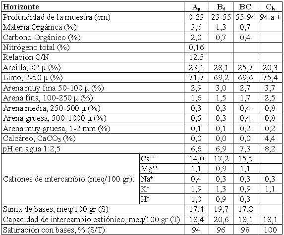

Argiustol údico, franca fina, mixta, térmica
Capacidad de uso: IIIc
La Serie Jesús María es un suelo bien drenado, vinculado a un relieve de lomas suavemente onduladas con pendientes que no superan el 1%. Se ha desarrollado a partir de sedimentos loéssicos de textura franco limosa. Los primeros 23 cm que constituyen la capa arable, son de color pardo grisáceo oscuro, de textura franco limosa y estructura en bloques. Hacia abajo pasa a un horizonte enriquecido en arcilla, con estructura prismática y abundantes barnices en las caras de los agregados. La transición entre este horizonte y el substrato (horizonte Ck) es gradual, encontrándose este último a 94 cm de profundidad; es un sedimento friable de textura franco limosa y presenta abundante material calcáreo en la masa del suelo. Son suelos de excelente capacidad productiva, con buena retención de humedad, siendo el clima su principal limitante.
Descripción del perfil típico:
El perfil modal de la Serie Jesús María, que se describe a continuación fue estudiado a 11 km al NO de la ciudad de Jesús María, departamento Colón, provincia de Córdoba.
Ap 0-23 cm; color en húmedo pardo grisáceo muy oscuro (10YR3/2), franco limoso; estructura en bloques subangulares medios moderados y granular; friable en húmedo; límite inferior abrupto, suave.
Bt 23-55 cm; color en húmedo pardo oscuro (7,5YR3,5/2); franco arcillo limoso; estructura en prismas irregulares medios moderados a débiles y bloques subangulares medios moderados; friable en húmedo; ligeramente plástico; ligeramente adhesivo; barnices húmico-arcillosos comunes y medios; límite inferior claro, suave.
BC 55-94 cm; color en húmedo pardo a pardo oscuro (7,5YR4/4); franco limoso; estructura en bloques subangulares medios moderados a débiles; friable en húmedo; escasos barnices arcillosos finos; límite inferior abrupto.
Ck 94 cm a +; color en húmedo pardo (7,5YR4,5/4); franco limoso; masivo; muy friable en húmedo; abundante material calcáreo pulverulento en la masa del suelo.
Cuadro Nº18
Datos analíticos Serie JESÚS MARÍA
Situación: Latitud: 30º52’S Longitud: 64º15’O Altitud: 630 m.s.n.m.

|